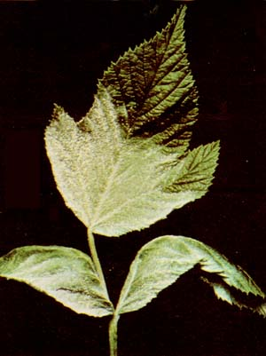
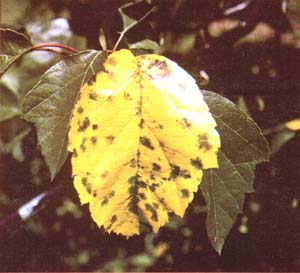

People who live in wet climates are often all too familiar with the effects of mildew on such plants as gooseberries, currants, raspberries, grapes, phlox, and roses ... and if the same individuals keep fruit trees, they're probably acquainted with apple or pear scab (Venturia inaequalis) as well. Many commonly used wholistic controls aren't terribly effective against these fungi ... while more potent fiingicides-including lime sulfur-do indeed destroy mildew and scab but, unfortunately, also kill Anthocoris musculus, a valuable predator of mites and aphids.
The dilemma does have a resolution, though ... and it came about through the work of an English entomologist, Dr. Peggy Ellis. Since commercial fruit growers commonly spray a 5% solution of synthetic urea on fallen leaves to control apple and pear scab, Dr. Ellis reasoned that human urinewhich contains 2 to 4% urea, depending on the diet-could serve the same purpose.
The entomologist first tested her theory on a backyard gooseberry patch ... and was pleased to find that the urine was extremely effective in combating a mildew problem that had afflicted the plants. Encouraged by this success, she reported her discovery to the members of the Henry Doubleday Research Association in the fall of 1978. As a result of her report, I soon became aware of this breakthrough in wholistic fungus control. And since my own currant crop was plagued with a severe mildew problem at the time, I was able to test the remedy immediately ... and my results were every bit as good as those that Dr. Ellis had observed.
More work has been done-on both a formal and an informal grower-to-grower level-over the past few years, and the success record is impressive enough to make me want to pass the news of this technique along to MOTHER's fruit-growing readers.
UREA . . . I'LL NEVER STOP SAYING UREA
Thanks to the research completed thus far, it's possible to outline both preventive and curative urine treatments. In either case, though, be aware that undiluted urine will sometimes scorch leaves and could kill foliage, so the substance should generally be used in its pure form only on dormant wood.
Step 1: Spray straight urine on trees and shrubs just before the leaves fall in the autumn ... or soon thereafter (in this case, of course, leaf burn won't be a problem). Make sure, too, that the ground beneath the plants-out to the drip line-is well covered with the liquid ... as this precautionary measure will destroy any spores present on the fallen leaves.
Step 2: Treat the trees and shrubs with undiluted urine again in the spring, before the buds open. Be sure to spray the earth beneath the plants, as well.
Step 3: Three weeks after the buds have opened, treat the patch or orchard with a solution of four parts water to one part urine. This procedure should be repeated whenever you notice signs of a developing infection.
Spray the affected bushes or trees with a four-to-one solution of water and urine as soon as signs of fungal attack appear. (In critical cases, I've used a two-to-one solution, and achieved excellent results with no evident burning of leaves.)
Urine can be stored in plastic pails or tanks. When it's kept in such containers over a period of time, occasional stirring will render the liquid all but odorless. Some of the nitrogen in the urine will escape during storage, unless you add a small quantity of material that's rich in carbon content (two excellent candidates are dry leaves and chopped straw) to the pail before any fermentation takes place.
In short, human urine (which, if from a healthy individual, is pretty much sterile) should be of real value to backyard fruit and berry growers. To quote the Hen?y Double day Research Association Newsletter, "This easiest of all remedies ... should attack only the types of fungi which produce ascospores or conidia, but it is worth using it freely and observing results. . . ."
There's a readily accessible and effective solution to the problems of orchard mildew and scab.
EDITOR'S NOTE. Celine Caron is the coauthor, with lean Richard, of Fruits et petits fruits: Guide pratique de production agriculture ecologique, a fruit- and berrygrowing manual that was published in Quebec, Canada in 1981.
We want to note that MOTHER's staffers have not yet tested Caron's remedy ... and that it should be considered an experimental treatment and used sparingly on your crops until you're confident of its safety and effectiveness.
|
 |
 |
|